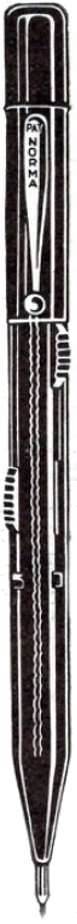

いらっしゃいませ。

多色鉛筆についてご連絡ください:
または、一番下までスクロールして、お問い合わせフォームを使用してください。
このウェブサイトでは、情報の一部のみを掲載しています。

新聞などに載っている古いまたは奇妙な色とりどりの鉛筆の外観。
画像は必ずしも本文に含まれるものではありません
しかしその後、彼は店に入り、銀の 4 色ペンを 7 マルク 50 で購入しました。 それは彼が何年も熱望し、時には夢にまで見たものの一つでした。 彼は4色ペンをポケットに入れて立ち去った。途中、彼はよくそれを取り出して、愛おしそうに見つめました、 緑、黄、赤、青のペンを飛び出させて、徐々に気づいた 彼は金持ちになったということ。

私は彼に銀色の 4 色ペンを渡し、その仕組みを説明しました。医者はそれを試してみた そして悪魔の物も素晴らしい贈り物であるという確信を笑いながら表明した。

1952 年 5 月 14 日、ゴリラの「アキレ」は長さ 13.5 cm の 4 色ボールペンを飲み込みました。 彼はノートに落書きできるように警備員からペンを受け取りました。 (以下はゴリラの麻酔と手術の詳細な説明です。おそらく最初に文書化されたものです) ゴリラの麻酔と胃切開 - 4 色のペンのせい!)

最後の手段として、4 色のペンは印象的なカラフルなベクトルを提供する必要がありました。
そのとき、シュティーフェル教授の声が私の背後で突然聞こえました。「色は思考の代わりにはなりません。」
人間の創意工夫がこれほど士気を低下させたことはありません。

高市早苗首相が２１日夜に行った就任後初の記者会見で、メモをとる様子が報道映像に映っていた「ピンクのボールペン」が、ＳＮＳ上で商品名が“特定”され話題になっている。初の女性首相としての手腕からか、「私も首相にしたい」との声も増えている。
（コンテクスト：Sanae Takaichi2025年に日本の首相に選出された彼は、2025年10月21日の記者会見で5色ペンモデルMSXE510003868を着用しました「三菱ジェットストリーム4&1」自分自身と一緒に。
その後、多くのサポーターが彼を購入したことで注目を集めました。この行動は冗談になります』sanakatsu」（サナ活、サナ活動）。ここで、サナは彼女の名前（サナエ）の略称です。

メカニズムのタイムライン
プッシュピン
回転機構
ロッキングスリーブ機構
自動ビジュアルダイヤル
スナップフィット機構
クロマチック/シャボ